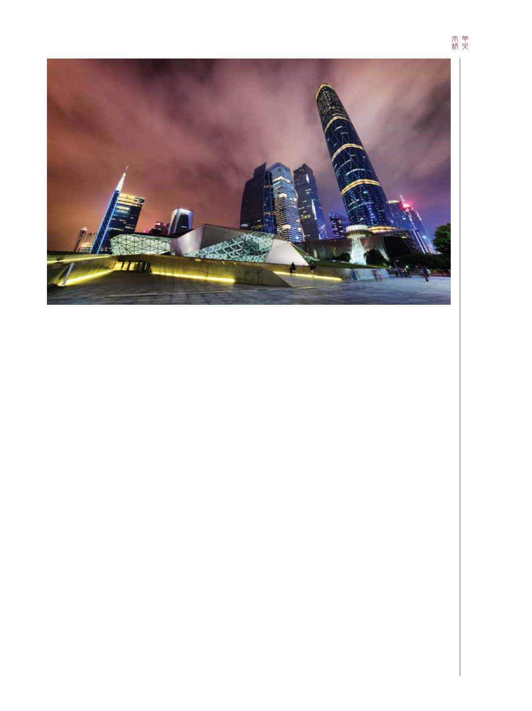

53 / 116
53 / 116


53
以色列約有90家企業在納斯達克上市，而香
港僅有20多家。這是為甚麼？
讓我以三部分回答這問題。
第一是安全感。首先，我們須了解香港的模式。很多
香港人祖籍華南地區，尤其是廣東，其中不少人當年是涉
水渡河到香港的，家父即為當年眾多難民中的其中一名。
由於中國大陸當時的政治及社會動盪——這在上世紀四五
十年代很普遍，人們懷著破釜沉舟的心態來到香港，所以
警惕心甚強。那時候，香港只有一所大學，能夠進入大學
的，無不是名列前茅的精英。
那時候的想法是︰「最好努力學習，且不要忘記還在
中國大陸的親戚」。這是關乎合作和安全感的問題，故要
求人們順從。老一輩總是說：「別作他想，我們經營的雜
貨業或旅館業務，正是我們所能理解的。」
這樣的文化，是無助促進創新的。年輕專業人士要麼
加入大集團工作，要麼繼承父母衣缽經營小型家族企業；
話說回來，這些小型家族企業多年來表現出色。類似香港
這種環境，似乎只有東南亞地區。在動盪時期及過後，安
全感總是最重要的考量因素。
第二是保守主義。統計數字顯示，東南亞地區（不包
括日本）的企業中，有高達93%是家族企業，即企業有家
族成員控制、掌管及管理。這意味著不少大小家族企業，
都以家長式方法管理。不少老闆僅於週五踏進辦公室，簽
了幾張支票、說了幾句話後，便離開辦公室前往爾夫球場
了。這讓我回想起與某家上市公司的經歷；當時，這家上
市公司曾邀請我加入其董事局。
他們對我說：「你讀過不少書，看上去又像華人。你
應該加入我們的董事局，說幾句話就可以引領我們走出冰
河時代。」
我回答說：「好的，先讓我與所有董事局成員接觸
吧。」如是這，我花了一個星期，逐一會見及了解董事局
成員。會面過後，我滿心興奮的想：「我準備好下一個階
段了。」
然而，他們過後問我：「週日你有甚麼節目嗎？跟我
們一起到茶樓飲茶吧！」週日飲茶時，坐在主席位置的是
企業老闆的母親。她問了我不少問題，其中包括「你是在
哪裡出生的？」、「在甚麼時辰出生？」、「你的生肖是
甚麼？」、「你的耳朵怎麼會這樣的呢？」云云，就是沒
有一個問題跟我的專業經驗有關。這位老太太，是垂簾聽
政審視董事局每一個重要決定的人。最後，我明白了——
她是真正掌控權力的人。這位老太太的名字，沒有出現在
年度報告中，卻是最終決策者。這就是亞洲！
第三是需要。香港的脆弱，在非典型肺炎事件中表露
無遺。我從來沒看見過這樣的恐慌，是瀰漫在居民之間的
一種恐慌；對上一次出現這樣的恐慌，可能要追溯至日本
侵華時期了。如果你在巴士或列車上咳嗽，身邊的乘客肯
定馬上遠離你。當時介乎歇斯底里的恐慌，導致不少香港
居民跑到澳洲及加拿大等地。非典型肺炎肆虐時，酒店被
迫創新以繼續生存——房客在酒店裡可享用5頓而不是3頓
自助餐。時世所迫，企業及個人要繼續生存，就須創新。
儘管上海迅速冒起，但香港仍然是通往中國的門戶。
如果你要的是法治、秩序、透明度，以及保護企業的法律
制度，那只有兩個選擇——新加坡及香港。在香港，我們
對西方文化並不陌生；在那裡，你可以找到各類食品、產
品及專業服務，而且所有人基本上都會說英語。